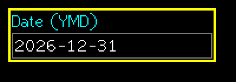
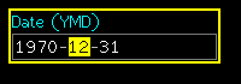
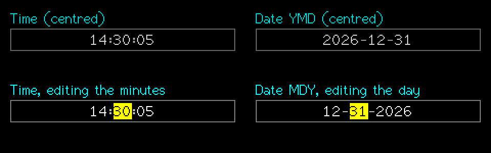

SuperDateBox
A date made of year, month and day fields. Changing the month pulls the day back into range.
Editable (modal edit)src/SuperTimeBox.h
What it looks like



Real renders from the library (headless, dark theme, Font2, shown at 2x).
Quick start
SuperDateBox d(&lcd, 10, 10, 130, &lgfx::fonts::Font2, &Enc, &BtnA, &BtnB, DATE_YMD);
d.SetLabel("Date (YMD)");
d.SetDate(2026, 12, 31);
// d.GetValue() == "2026-12-31" in every styleUnique features
- Two display styles:
DATE_YMDandDATE_MDY(SetStyle). The value is alwaysYYYY-MM-DD, independent of the style. - Day follows month: changing 12-31 to February gives 28 or 29 depending on the leap year.
SetYearRange(min,max), default 1970..2099.SetSeparator(c)(default-).
GUI workflow
Same as the time box: encoder changes the current field, A short = next field in display order, A long = accept. Touch: select a field, drag, lift to accept.
Event workflow
edit contract. OnChange also fires when a constrained day moves because the month changed.
Main API
| Call | What it does |
|---|---|
SetDate(y,m,d) | false if invalid |
GetYear/GetMonth/GetDay | Fields |
GetValue()/SetValue(str) | "YYYY-MM-DD" |
SetStyle(DATE_YMD|DATE_MDY) | Display order only |
SetYearRange(a,b) | Allowed years |
DaysInMonth(y,m) | Leap years handled |
Tips and tricks
TipPut the style in the label ("Date (YMD)") so users know the order.
Pitfalls
Watch outParse and store the value, not the displayed text: the display order changes with the style.